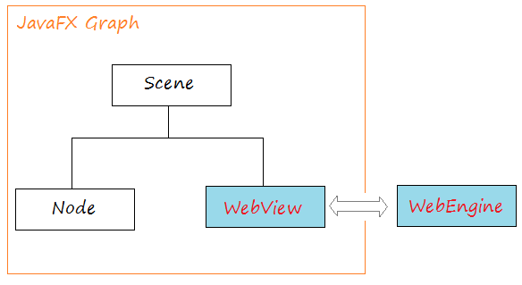
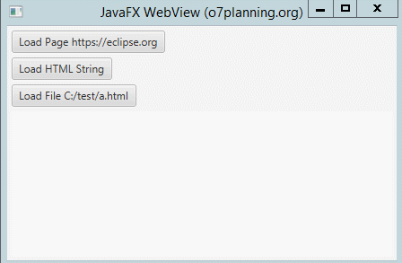

JavaFX WebView és un mini navegador otambè anomenat navegador integrat en l’aplicació JavaFX. Aquest navegador es basa en WebKit, que és un motor de navegador de codi font obert que admet CSS, Javascript, DOM i HTML5. JavaFX WebView li permet fer les següents tasques en les seues aplicacions JavaFX:
La implementació actual (JavaFX 2.3) del component WebView admet les següents característiques HTML5:
<input type = "color">)<meter><progress><details> i <summary>.A continuació es mostra una imatge amb l’arquitectura del navegador integrat en JavaFX:

La classe WebEngine proporciona funcionalitat bàsica de pàgina web. Admet la interacció de l’usuari, com navegar per enllaços i enviar formularis HTML, encara que no interactua directament amb els usuaris. La classe WebEngine maneja una pàgina web alhora. Admet les funcions bàsiques de navegació de carregar contingut HTML i accedir al DOM, així com executar comandos Javascript.
WebView s’estén des de la classe Node, embolica un objecte WebEngine i mostra contingut HTML. Pot obtindre l’objecte WebEngine de WebView utilitzant el mètode getEngine ().
// Create a WebView
WebView browser = new WebView();
// Get WebEngine via WebView
WebEngine webEngine = browser.getEngine();
// Load page
webEngine.load("http://www.cipfpbatoi.es");
getChildren(): Obté la llista de fills d’aquest pare. getEngine(): Retorna el motor de la vista web. getFontScale(): Retorna l’escala de font de l’objecte webview. getHeight(): Retorna l’altura d’aquest WebView. getMaxHeight(): Retorna l’altura màxima. getMaxWidth(): Retorna l’ample màxim. getMinHeight(): Estableix l’altura mínima. getMinWidth(): Retorna l’ample mínim. getPrefHeight(): Retorna l’altura preferida. getPrefWidth(): Retorna l’ample preferit. getWidth(): Retorna l’ample d’aquest WebView. getZoom(): Retorna el factor de zoom actual. maxHeight(double v): Estableix l’altura màxima. maxWidth(double v): Estableix l’ample màxim. minHeight(double v): Estableix l’altura mínima. minWidth(double v): Estableix l’ample mínim. prefHeight(double v): Estableix l’altura preferida de la vista web. prefWidth(double v): Estableix l’ample preferit de la vista web. setFontScale(double v): Estableix l’escala de font de la vista web. setMaxHeight(double v): Estableix l’altura màxima. setMaxWidth(double v): Estableix l’ample màxim. setMinHeight(double v): Estableix l’altura mínima. setMinWidth(double v): Estableix l’ample mínim. setPrefHeight(double v): Estableix l’altura preferida. setPrefWidth(double v): Estableix l’ample preferit. setZoom(double v): Estableix el zoom per a la vista web.
